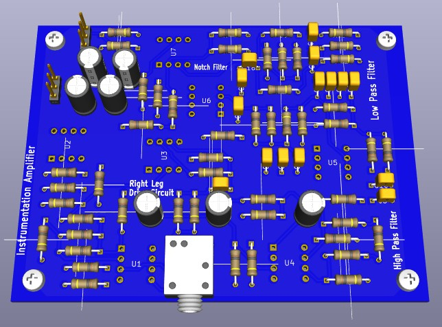
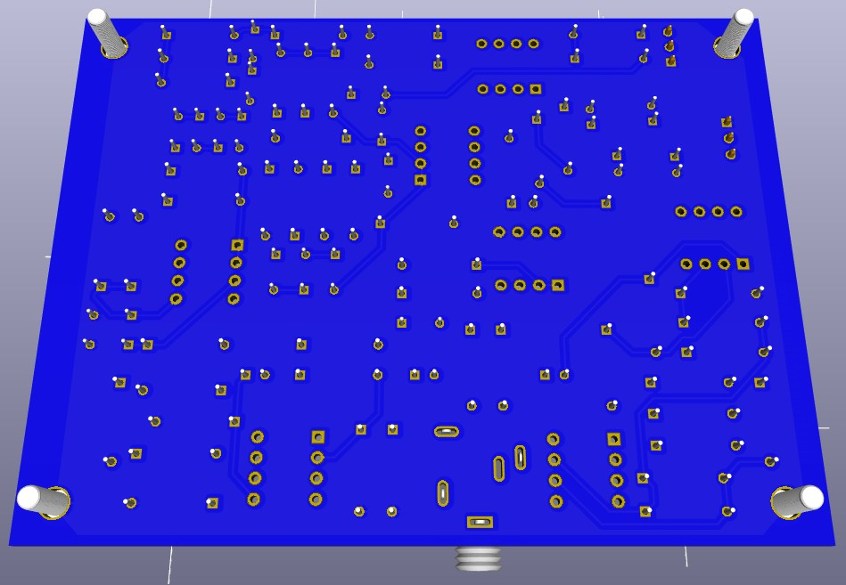
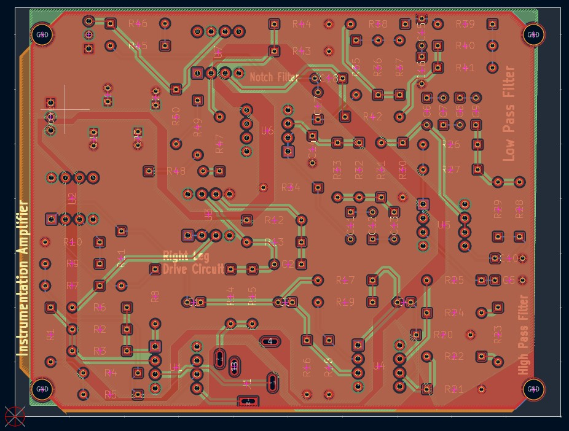
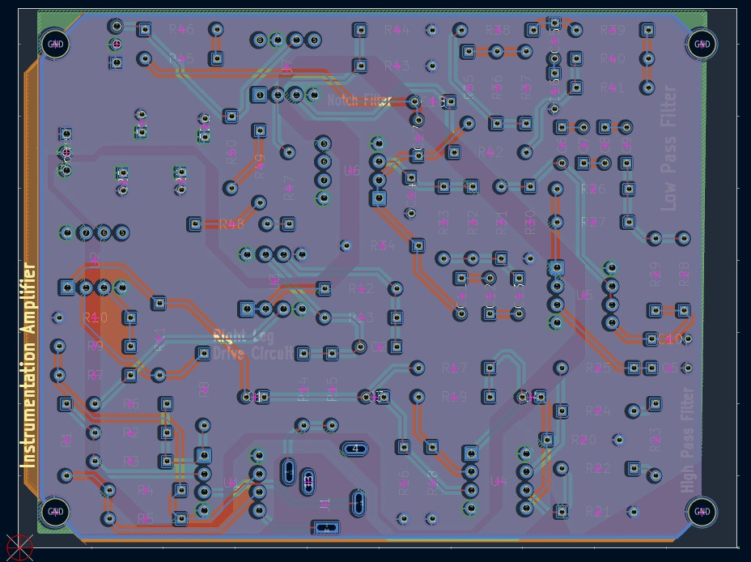

This project is an analog ECG heart‑rate monitorsystem that captures, amplifies, filters, and displays real‑time ECG waveforms using fully analog circuitry combined with a microcontroller‑based interface.

ECG Monitor 3D Top view

ECG Monitor 3D Bottom view

Top Signal Layout

Bottom signal Layout
The ECG system consists of five major analog signal‑processing blocks:
These stages work together to extract the heart’s electrical activity, suppress noise, and produce a clean ECG waveform suitable for display and analysis.
A 4‑layer PCB was designed to ensure signal integrity, proper grounding, and thermal management. Power and ground planes were strategically placed to minimize noise and interference. Sensitive analog traces were routed with care to avoid crosstalk and maintain ECG fidelity.
The circuit was first built on breadboards for stage‑by‑stage validation. Using an oscilloscope, we fine‑tuned filter parameters and notch frequency. The final device produced clean, accurate ECG waveforms comparable to a commercial patient monitor.